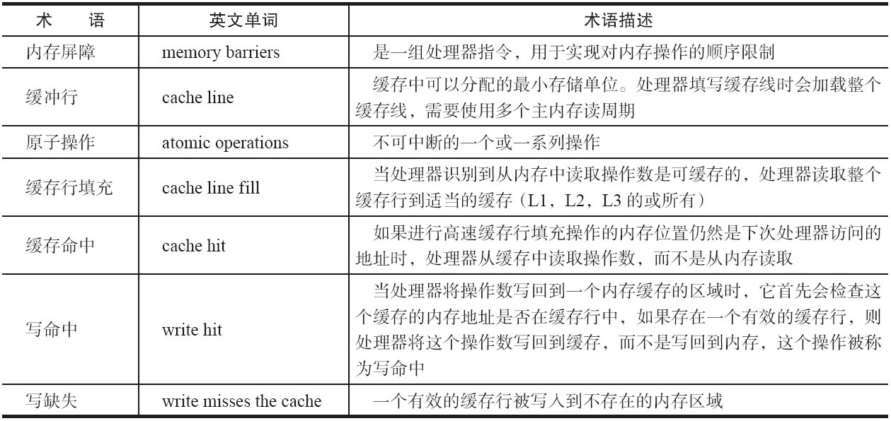

Volatile 的应用
在Java多线程并发编程中，synchronized 和 volatile 都极为重要，volatile 可以看做是轻量级sychronized, 在使用得当的情况下，volatile的使用与执行成本会更低，因为它不会引起线程的上下文切换和调度。
Volatile 的定义和实现原理
定义
JLS3中对volatile定义如下：如果一个字段被申明为volatile, Java线程的内存模型确保所有线程看到这个变量是一致的。简而言之，volatile变量具有如下两个特点：
实现原理
CPU相关术语：

与普通变量相比，对volatile修饰的变量写入，会在对应的汇编指令中多一条Lock前缀指令，该指令在多核处理器中产生如下两种结果：
- 将当前处理器的缓存行的数据写回系统内存；
- 写回内存的操作会导致其他CPU缓存了该内存的数据无效；
关于缓存一致性原理及相关技术可以参考《大话处理器》Cache一致性协议之MESI、CPU cache结构和缓存一致性（MESI协议）和缓存一致性（Cache Coherency）入门。
正确使用 volatile 变量
参考Brian Goetz的Java 理论与实践: 正确使用 Volatile 变量